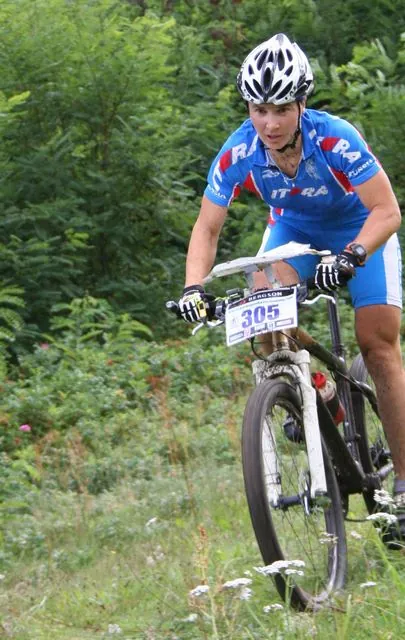
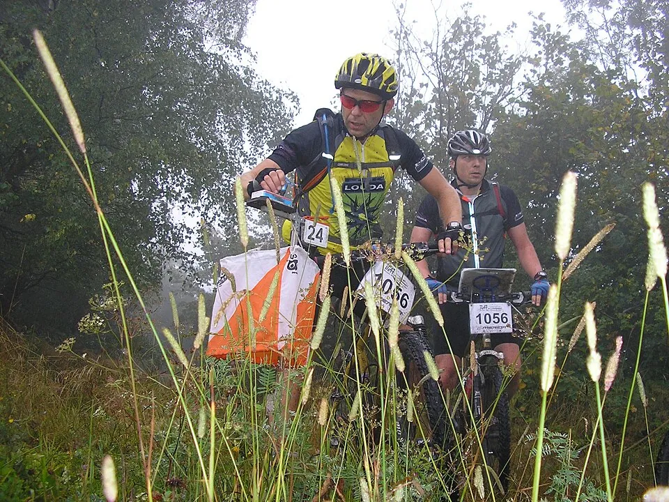
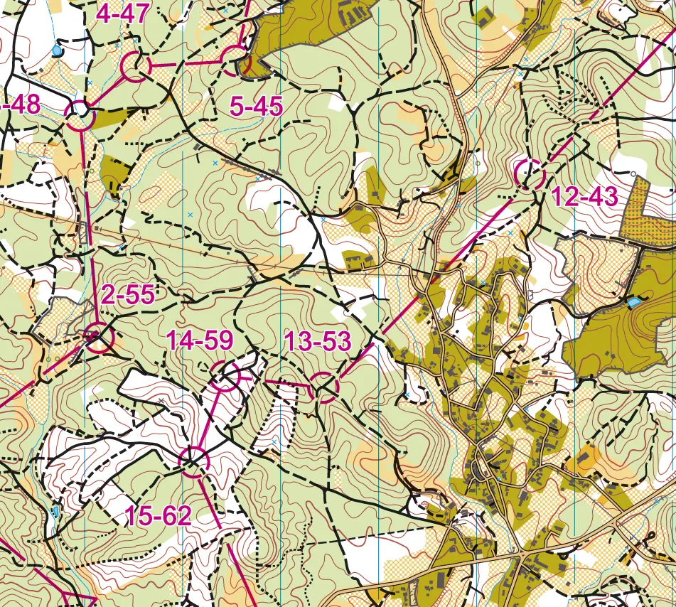
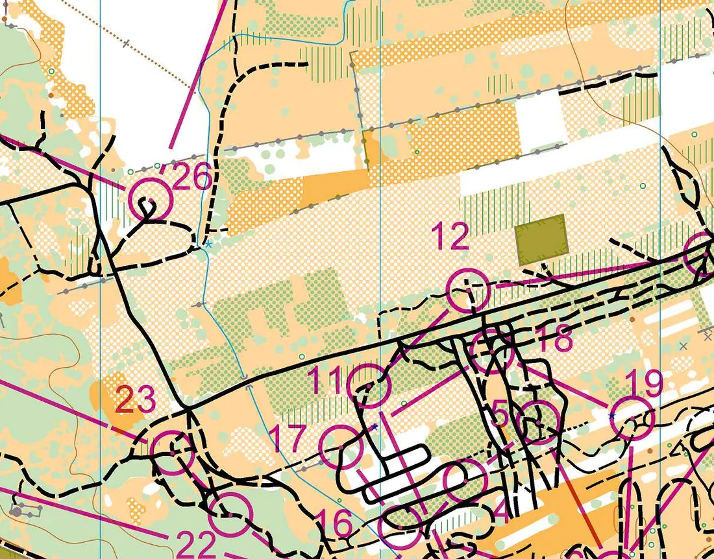
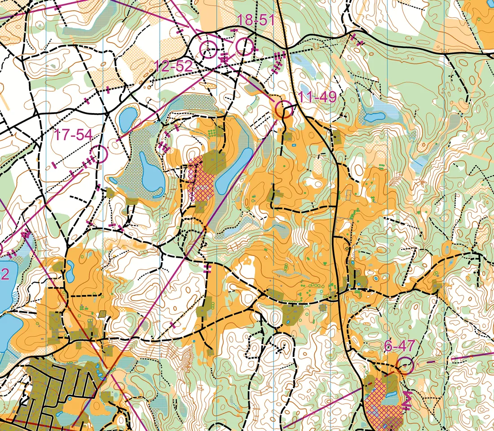
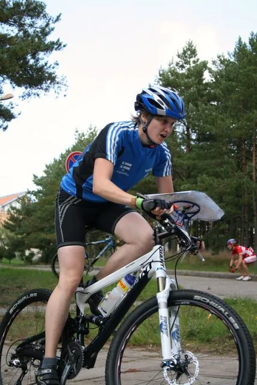
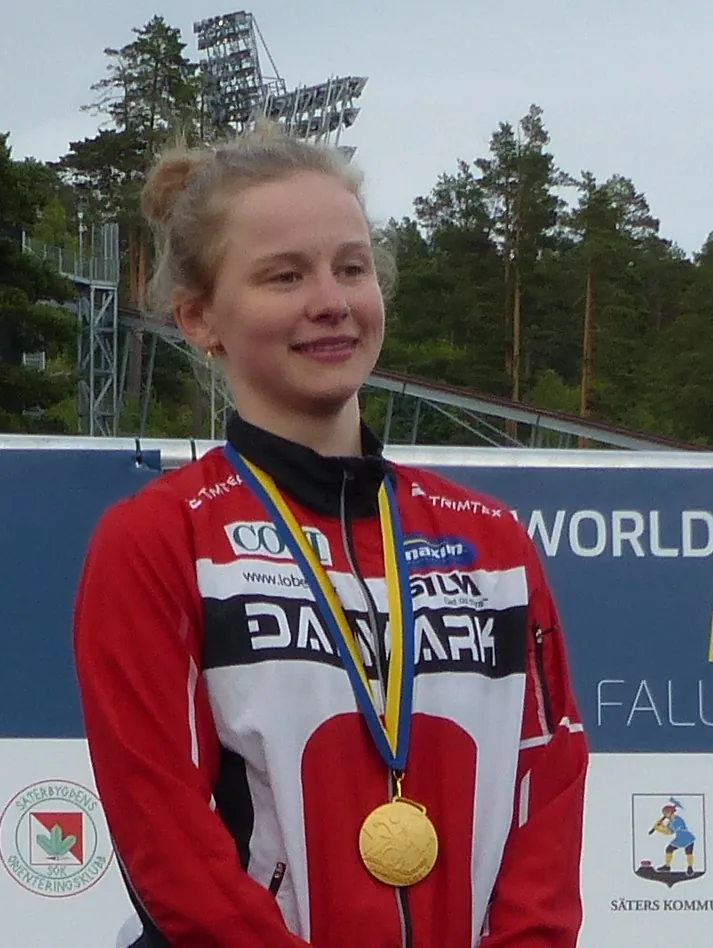
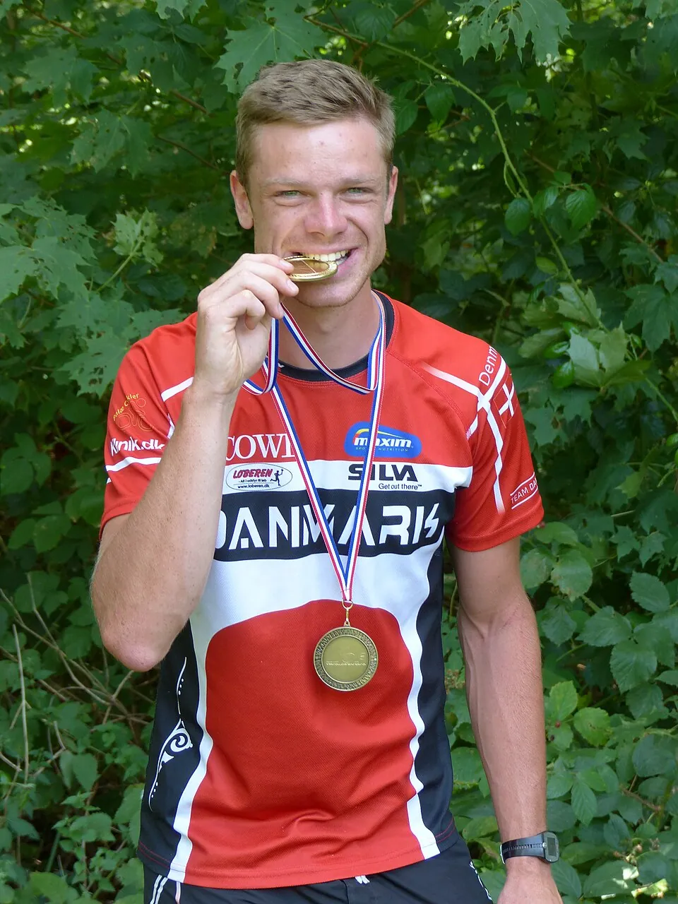
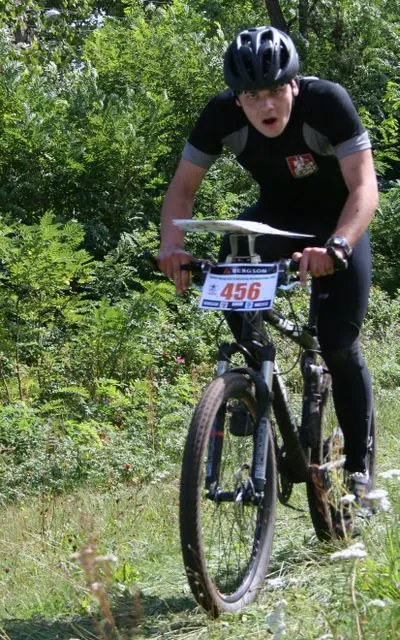

Европейское первенство велоориентировщиков
Чемпионат Европы по велоориентированию, который проводит Международная федерация ориентирования (IOF), появился в 2006 году, через четыре года после первого чемпионата мира. Сначала он проходил ежегодно, в 2010-х — раз в один-два года, а с 2021 года снова ежегодно и служит этапом Кубка мира.
Для петербургских ориентировщиков этот чемпионат особенный: в 2011 году его принимала Ленинградская область.
- Первый чемпионат
- 2006, Варшава (Польша)
- В России
- 2011, Ленинградская область
- Дисциплины
- спринт, миддл, лонг, масс-старт, эстафета / смешанная эстафета
- Статус
- с 2020-х — этап Кубка мира по MTBO
2006–2011: первые чемпионаты

Первый чемпионат Европы прошёл в конце лета 2006 года в варшавских лесах. Сборная России сразу собрала урожай медалей: Антон Фолифоров — серебро в спринте, Анна Устинова — серебро на миддле, Надия Микрюкова и Ксения Черных — бронзы, женская эстафета — серебро. Почти через двадцать лет, в 2025 году, Варшава примет уже чемпионат мира.
В 2007 году в тосканском Кастельфьорентино Ксения Черных выиграла спринт, в 2008-м чемпионат прошёл на Куршской косе, в литовской Ниде, а в 2009 году в Дании Руслан Грицан выиграл спринт, Надия Микрюкова — длинную дистанцию.
В сентябре 2011 года чемпионат Европы приехал в Ленинградскую область — центром соревнований было Рощино на Карельском перешейке. Обе российские эстафеты стали серебряными: у мужчин бежали Валерий Глухов, Руслан Грицан и Антон Фолифоров, у женщин — Светлана Поверина, Ольга Виноградова и Ксения Черных.
2013–2019: российские победы


В 2013 году в польском Замосце Валерий Глухов выиграл миддл; в программе тогда появилась смешанная спринт-эстафета, и Светлана Поверина с Русланом Грицаном взяли в ней серебро. В 2015 году в португальской Иданья-а-Нове Антон Фолифоров выиграл миддл и длинную дистанцию.
У женщин главной звездой стала Ольга Шипилова-Виноградова: длинная дистанция 2017 года во Франции и миддл 2018 года в Будапеште. На чемпионате 2019 года в Польше вместо классической эстафеты разыграли смешанную, и россияне Анастасия Свирь, Валерий Глухов и Антон Фолифоров стали вторыми, а Фолифоров выиграл масс-старт.
С 2021 года: каждый год и новые места

Чемпионат 2021 года в Абрантеше прошёл в октябре, после паузы, вызванной пандемией. Затем последовали литовская Игналина (2022), португальское Лоле (2023), польская Оструда (2024) и Вильнюс (2025), где датчанка Николине Сплитторфф выиграла все три личные гонки.
Чемпионат 2026 года изначально готовили в португальском Оурене, но в итоге он прошёл в Алмейде. Спринт проложили внутри звездообразной бастионной крепости XVII века — редкий по эффектности район для велоориентирования.



Герои




Из российских гонщиков чемпионами Европы становились также Руслан Грицан (спринт 2009), Антон Фолифоров (миддл и лонг 2015, масс-старт 2019), Ольга Шипилова-Виноградова (лонг 2017, миддл 2018) и Ксения Черных (спринт 2007).
Смотреть
Источники
Даты, места и составы — Календарь O-Maps; статья Википедии Чемпионат Европы по спортивному ориентированию на велосипедах; новости IOF на orienteering.sport; материалы организаторов EMTBOC 2026. Фрагменты карт — сайт EMTBOC 2021, SportRec; фотографии — Wikimedia Commons (авторы и лицензии указаны в подписях).Все старты серии с протоколами, картами, GPS-трансляциями и видео: в календаре и на странице чемпионата.